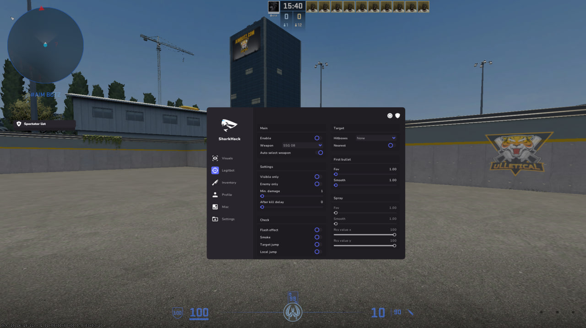
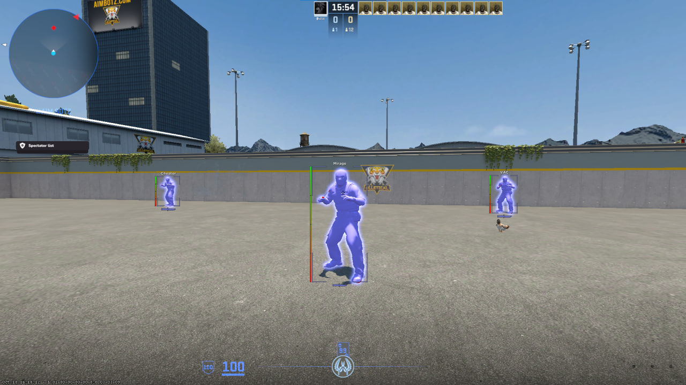
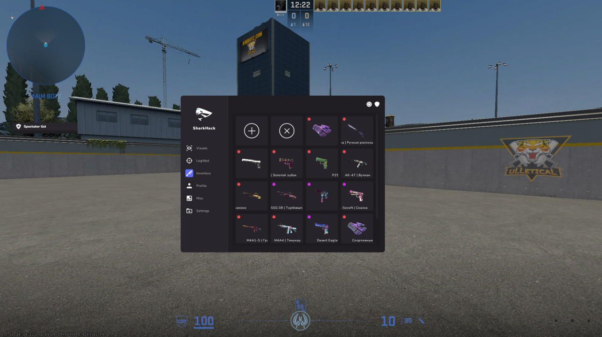

1
Быстрый старт
Не нужно искать нужный файл по разным источникам: лоадер, маршрут запуска и подсказки собраны на одной странице.
Одностраничный хаб для тех, кто хочет быстро скачать лоадер, понять порядок запуска и заранее посмотреть, какие модули доступны в сборке.
Основная кнопка сразу запускает загрузку архива без лишних страниц между кликом и файлом.
Инструкция объясняет, где применяются готовые профили и как не потеряться в первых настройках.
Расширенный вариант открывается только по действию пользователя: через карточку, футер или модальное окно.
Страница собрана как рабочий хаб: загрузка, порядок запуска, обзор модулей и ответы на частые вопросы в одном месте.
Не нужно искать нужный файл по разным источникам: лоадер, маршрут запуска и подсказки собраны на одной странице.
Тексты написаны как короткая карта действий: что скачать, что проверить перед стартом и куда перейти дальше.
Добавлены блоки совместимости, FAQ и частые ситуации, чтобы страница не была только кнопкой скачивания.
Короткая последовательность для первого запуска: скачайте архив, проверьте профиль и только потом меняйте параметры под себя.
Нажмите кнопку в герое. После клика начнется загрузка файла, а на странице появится дополнительное окно с вариантом расширения.
Распакуйте архив, откройте лоадер и начните с готового профиля. Так проще понять базовую чувствительность и визуальные параметры.
После проверки включайте только нужные модули, сохраняйте свой профиль и держите под рукой ссылку на FAQ ниже.
Вместо длинного списка показаны три главных направления: помощь в наведении, визуальная информация и внешний вид инвентаря.



Этот блок нужен для практической пользы: он снижает количество случайных ошибок при первом открытии архива.
Используйте актуальную Windows 10/11, обновленные драйверы видеокарты и запущенный Steam-клиент.
Первый запуск лучше делать в тренировочном сценарии, чтобы спокойно пройтись по профилям и горячим клавишам.
Скачивайте файл только с основной кнопки на этой странице и не переименовывайте папку до распаковки.
Если загрузка не начинается или файл удаляется браузером, проверьте разрешения загрузок и обратитесь в чат.
Короткие ответы добавляют странице самостоятельную ценность и закрывают типовые вопросы до перехода в чат.
Модальное окно не запускает переход само. Оно просто показывает дополнительный вариант для тех, кому нужен расширенный набор.
Нет. Основная загрузка уже начинается после клика по кнопке. Переход дальше остается отдельным ручным действием.
Обновите страницу, проверьте разрешение загрузок в браузере и повторите клик по основной кнопке.
Они дают стартовую конфигурацию, от которой проще отталкиваться, чем собирать каждую настройку с нуля.
Откройте приватную версию, если нужны дополнительные модули, гибкие профили и отдельный сценарий доступа.
Для новостей, обсуждений и ручного перехода оставлены отдельные карточки, чтобы пользователь сам выбирал следующий шаг.